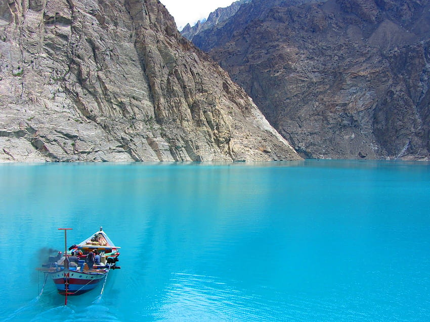

1. Hunza Valley
Located in Gilgit Baltistan, the Hunza Valley is one of Pakistan’s hidden gems. This isolated valley is nestled between the Himalayas and the Karakoram mountain peaks. This is one of the best places to visit in Pakistan because of its lush farmlands. Here you can find markhors, ounces, ibexes, and red foxes. In this valley, a glorious view awaits you, and the locals are warm and friendly.

Best time to Visit:April to September
2. Attabad Lake
This beautiful lake which provides tranquil waters was originated as a result of a landslide in January 2010 in Attabad Village. The lake has vivid blue waters that pierce through the hilly land of Hunza Valley The lake is one of the most popular tourist places in Pakistan , offering exciting experiences like skiing, boating, catching fishes and others.
.jpg) Best time to Visit: March to June
Best time to Visit: March to June
This beautiful lake which provides tranquil waters was originated as a result of a landslide in January 2010 in Attabad Village. The lake has vivid blue waters that pierce through the hilly land of Hunza Valley The lake is one of the most popular tourist places in Pakistan , offering exciting experiences like skiing, boating, catching fishes and others.
Best time to Visit: March to June